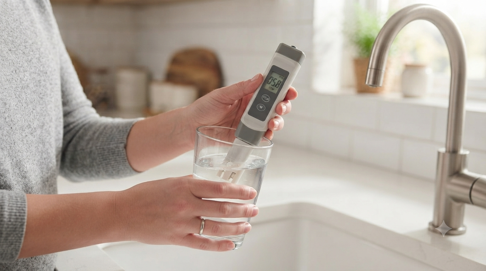
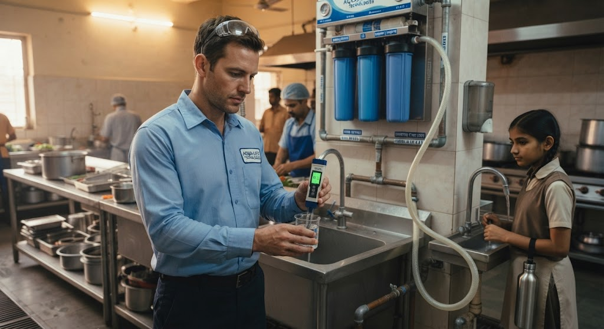

Find my solution
Answer three questions for a starting recommendation. It takes under a minute, costs nothing, and we confirm it with an on-site water test before anything is installed.
Three questions, one starting point
Tell us about your water source, your property and what is bothering you most. We'll point you to a starting recommendation.
What's your water source?
What kind of property is it?
What's bothering you most?
Your starting recommendation
This is a starting point based on common cases — we'll confirm with an on-site water test before recommending a final system.
What we actually look at
The finder gives you a starting point. These six factors decide the final system.
-
Water hardness
Calcium and magnesium content decides whether you need a softener, and how large it must be.
-
TDS reading
Total dissolved solids tell us whether your drinking water needs RO, or whether a lighter treatment is enough.
-
Water source
Borewell, municipal (Cauvery) and tanker water behave differently, and the same source can change through the year.
-
Daily consumption
Litres per day for the whole property, not just drinking water, sets the capacity of the system.
-
Number of users
Household size or office headcount sets peak demand and how often a softener needs to regenerate.
-
Space & plumbing
The inlet line, drain point, power point and floor space shape what can be installed, and where.
Softener, RO or UV: a quick comparison
Each treatment handles one job well. None of them replaces the others.
| Water softener | RO purifier | UV purifier | |
|---|---|---|---|
| What it treats | Hardness (calcium, magnesium) and scale | Dissolved solids (TDS) | Bacteria and viruses |
| What it does not do | Reduce TDS or purify drinking water | Fix scale in the wider plumbing | Reduce TDS or hardness |
| Best suited to | Hard borewell water in homes, apartments and offices | High-TDS drinking water | Low-TDS supply that needs microbiological protection |
| Where it is usually fitted | Main inlet line, for the whole property | Kitchen or drinking-water point | Kitchen or drinking-water point |
| Routine upkeep | Regeneration; many ion-exchange types use salt | Filter and membrane replacement | UV lamp and pre-filter replacement |

Have these ready when you get in touch
None of this is compulsory, but the more we know, the faster we can give you a useful answer.
- ✓ Your water source — borewell, municipal or tanker
- ✓ Type of property and roughly how many people use the water
- ✓ Any TDS reading you already have — a handheld meter reading is fine
- ✓ What bothers you most: scale, taste, soap, or something else
- ✓ A photo of the space where the system would go, if you have one
Keep exploring
Prefer to talk it through?
Tell us your area and what you're seeing. We'll arrange a free water test and take it from there.